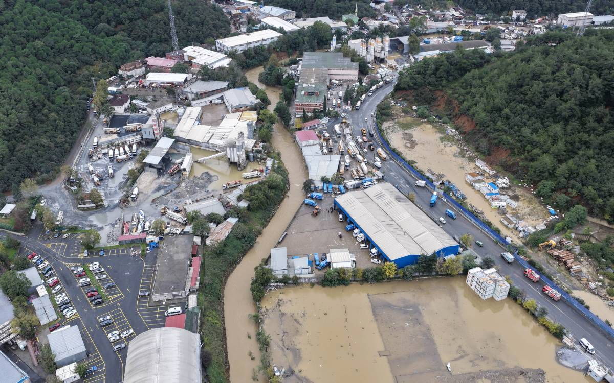

Takaichi to skip U.N. climate summit in Turkey
It will mark the third consecutive year that a Japanese prime minister has not attended a U.N. climate summit.
It will mark the third consecutive year that a Japanese prime minister has not attended a U.N. climate summit.

Canada does not need to shut down its industries or take a catastrophic financial hit to effectively fight climate change, one of the country's leading climate scientists testified during a landmark trial in a Vancouver courtroom this week.

Climate scientist Prof. Barış Önol told bianet following the Oct 14 floods in İstanbul, which killed seven people, that extreme rainfall would become both more frequent and more intense as a result of the climate crisis.
A mainland Chinese company and its director have pleaded guilty to fraud after submitting falsified certificates to win a HK$52.9 million (US$6.78 million) contract to supply drinking water to civil servants in Hong Kong. The high-profile procurement scandal came to light in Augu
Even for countries where typhoons are a way of life, the last few months have brought unusually wild weather.
Etwas Bestimmtes gesucht? Alle Meldungen durchsuchen.